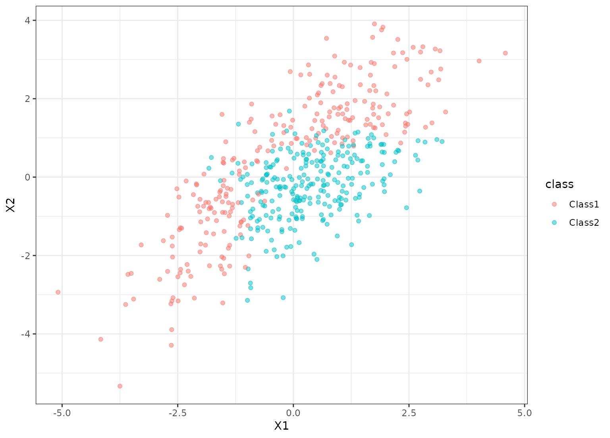

Parabolic class boundary data
a data frame
These data were simulated. There are two correlated predictors and two classes in the factor outcome.
data(parabolic) library(ggplot2) ggplot(parabolic, aes(x = X1, y = X2, col = class)) + geom_point(alpha = .5) + theme_bw()